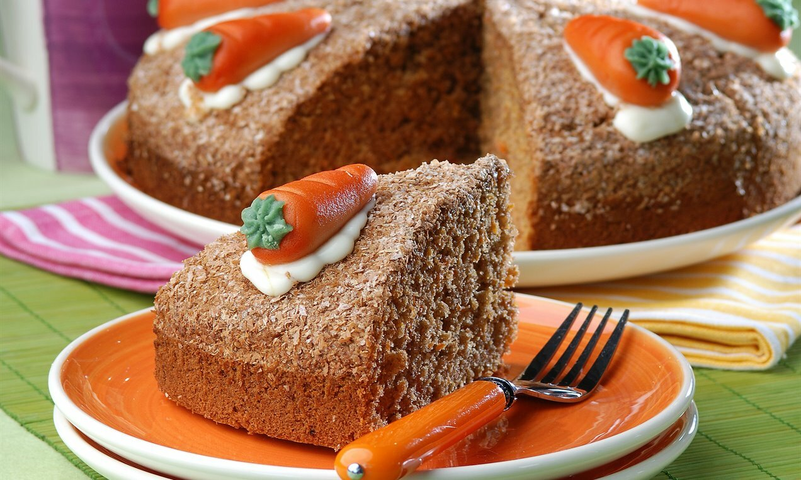

Malzemeler:
3 yumurta, 1 su bardaðý þeker, 1 su bardaðý süt, 2.5 su bardaðý un, yarým su bardaðý sývý yað, 3 adet havuç, 1 su bardaðý çekilmiþ ceviz,
1 paket kabartma tozu, 1 paket vanilya, 1 yemek kaþýðý tarçýn.
Yapýlýþý:
Havuçlu kek için öncelikle havuçlarý yýkayýn, soyun ve rendeleyin. Derin bir kapta yumurta ve þeker mikser ile köpük köpük olana kadar iyice çýrpýn.
Süt ve sývý yað ekleyerek karýþtýrýn. Un, kabartma tozu ve vanilya eleyerek ekleyin. Kývam alana kadar un ekleyin.
Karýþtýrdýðýnýz malzemelerin içerisine havuç, ceviz ve tarçýn ilave edin ve tekrar karýþtýrýn. Kullanýlacak kek kalýbýný yaðladýktan sonra karýþýmý kaba alýn.
170 derecede önceden ýsýtýlmýþ fýrýnda yaklaþýk 40 dakika piþirin. Ýlk yarým saat fýrýnýn kapaðýný açmayýn ki kekiniz daha güzel kabarsýn. :)
Piþen keki kalýptan daha kolay çýkarabilmek için soðumaya býrakýn. Soðuyan keki servis tabaðýna alýn. Dilediðiniz gibi süsleyerek servis edebilirsiniz. Afiyet olsun :)